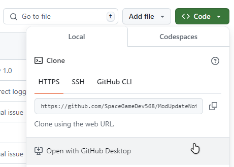
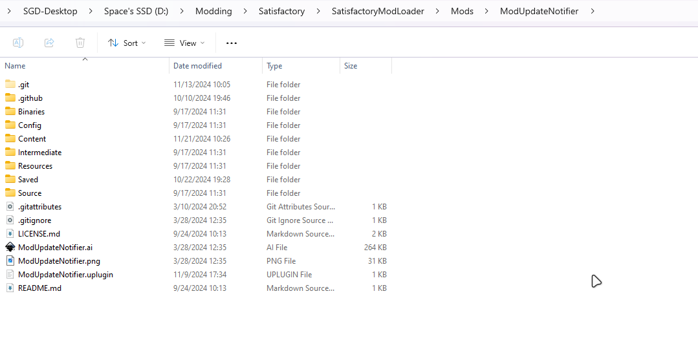
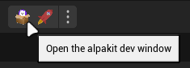
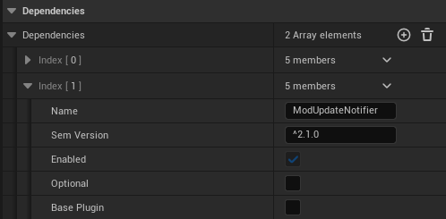
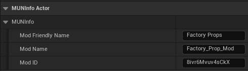
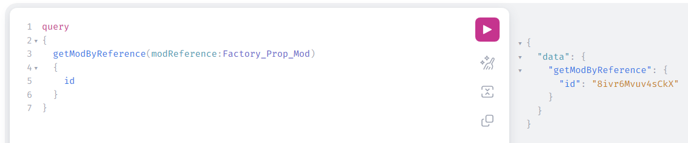
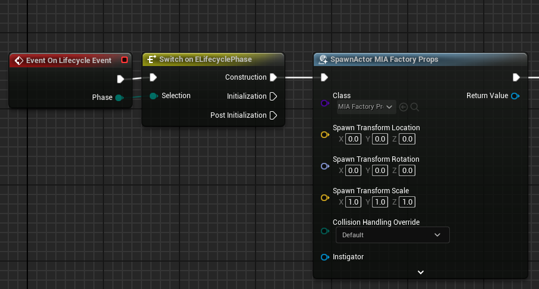
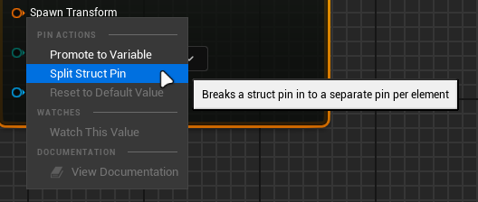
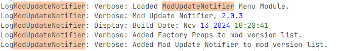

Mod Update Notifier
This page is intended as a guide for developers to show how to implement Mod Update Notifier into your own mods. If you have a question about anything covered here, please ping spacegamedev on the Satisfactory Modding Discord server for help.
Getting started
The first thing you need to do is clone or download https://github.com/SpaceGameDev568/ModUpdateNotifier to the Mods subfolder of your Satisfactory Modding project. You can do this using GitHub Desktop, or by downloading the zip file and extracting it.

When you are done, you should have a folder structure something like this:

Next, regenerate and build your project files as explained on the Satisfactory Modding Documentation and come back here when you're done.
Open the Unreal Editor if you haven't already, and open the Alpakit Dev window.

Next, click "Edit" on the mod for which you wish to implement Mod Update Notifier functionality. Scroll down to the "Dependencies" section and click the plus icon to add an element. Set the name of this element to ModUpdateNotifier and the "Sem Version" to ^2.1.0 or whatever the latest version is (Make sure to include the ^ at the beginning to accept newer versions of MUN as it is updated). Leave "Optional" and "Base Plugin" unchecked.

Now, navigate to your mod's root directory. Create a new Blueprint Class of type: MUNInfoActor and name it MIA_YourModName, replacing YourModName with the internal name of your mod.
When you open your new class, you should see three fields:
Mod Friendly Name: This is the name that shows up on SMR and SMM to the user.
Mod Name: This is the internal name of your mod, and should be the same as the mod reference on SMR.
Mod ID: This is the unique ID that identifies your mod on SMR, and is used to retrieve version data by MUN.
This example shows the values for the Factory Props mod:

You should already know the Mod Friendly Name and Mod Name for your mod, but the Mod ID requires a bit of extra work to get.
To get your mod's ID, go to https://api.ficsit.app/v2 in your browser. In the left panel, you'll see a bunch of commented out stuff, which you can go ahead and delete. Next, copy and paste this query command into the input field:
query { getModByReference(modReference:Factory_Prop_Mod) { id } }
Make sure to replace Factory_Prop_Mod with your mod reference.

Click the pink play button in the center to run the command. Now you should see a result in the right panel that looks something like this:
{ "data": { "getModByReference": { "id": "8ivr6Mvuv4sCkX" } } }
with the ID being unique to your mod. Copy the string from the ID field and paste it into the Mod ID property of your MUNInfoActor class. Your class should now look like the example from before.
Finally, if you haven't already, create another Blueprint Class of type MenuWorldModule. Inside of it, you'll need to add three nodes to the blueprint graph:
Event On Lifecycle Event
Switch on ELifeCyclePhase
Spawn Actor from Class
and arrange them like so:

Change the class of the SpawnActor node to the class of your mod's MUNInfoActor, which for me is MIA_FactoryProps. You'll also need to right-click on the Transform input and click "Split Struct Pin"

Save and compile your work. Your mod should now automatically be registered by Mod Update Notifier when the game starts!
Verifying that your mod works
You can verify that it's working by launching the game and looking at the log. Search for ModUpdateNotifier until you find the build info, which will list the detected mods below:

If you do not see your mod in the list, go back and re-read the instructions for how to set it up.